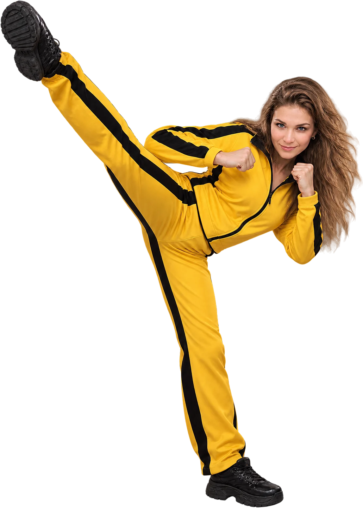
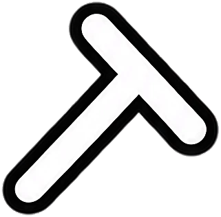
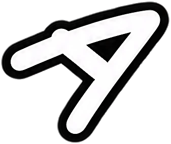
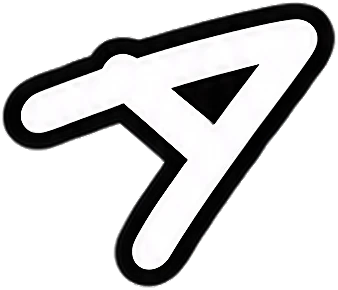
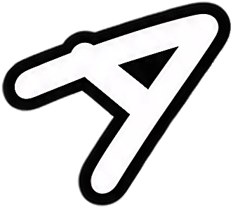
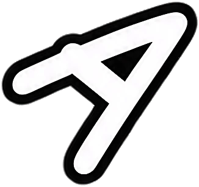
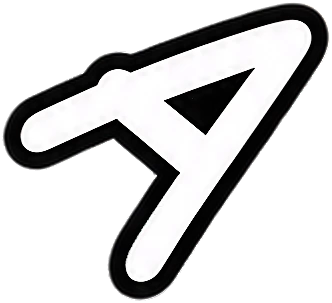
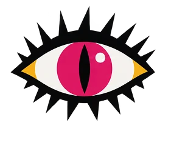
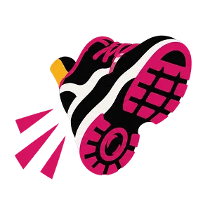

ко мне приходят за генерациями режиссурой
от визуального языка до готового видео — полностью на ИИ или в связке с реальной съемкой
обсудить проект →






клик — ударработы
что умею
проект
обо мне
Учила нейросети понимать производственные и бизнес-процессы задолго до того, как они научились рисовать и все заговорили про гпт
Мой бэкграунд — бизнес и технологии: ИИ-двойники крупнейших в РФ заводов, компьютерное зрение, «мозг» для беспилотников, виртуальный мобильный оператор, нфтшные дропы и пр. Запускала свои ИИ-стартапы с ребятами и работала на стороне венчурных фондов.
Я сама вела продукты и проекты — этапы, метрики, сроки — мы говорим на одном языке.

У меня художественное образование. И я до сих пор создаю работы своими руками в смешанной технике.
Танцую хип-хоп, пытаюсь не запутаться во всех Аурелиано у Маркеса и могнуть Вонг Кар-Вая по цвету.

Не держусь за один стиль. Человек многослоен. Не вижу причин ограничивать себя в смелых экспериментах. Сегодня — попсово и вирально, завтра — нишево и странно.
где здесь я
везде, кроме самого рендера: идея, драматургия, кадр, свет, цвет, ритм монтажа, звук, сборка. нейросеть здесь не принимает решений — она инструмент
сколько занимает по времени
в разы быстрее обычного продакшена. нет площадки, нет группы, нет графика смен. точный срок зависит от конкретного креатива. предоставлю оценку, когда обсудим задачу
сколько стоит
считается индивидуально по каждому проекту. глубина творческой задачи, уровень авторского вклада, хронометраж, адаптации под конкретную площадку и прочее — все это влияет на сумму
как идет работа
с вас идея
или хотя бы вайб,
остальное на мне